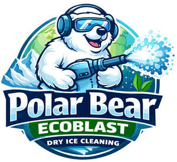

Trade Mark Journal No.2026/010 6 March 2026
UK00004342366 18 February 2026 (1,3,11,28,35,37)

- Class 1
- Dry ice; Dry ice [carbon dioxide]; Chemicals for use in the manufacture of abrasives; Chemicals for use in the manufacture of dry ice abrasives.
- Class 3
- Abrasive blasting preparations made of dry ice.
- Class 11
- Dry ice machines.
- Class 28
- Toys; Plush toys; Stuffed toys; Cuddly toys; Teddy bears; Soft toys; Soft toys in the form of animals; Plastic toys; Plastic character toys; Rubber character toys; Stuffed toys in the form of plastic character toys; Unstuffed toys in the form of plastic character toys.
- Class 35
- Marketing in relation to dry ice, dry ice production, and its uses; Online marketing in relation to dry ice, dry ice production, and its uses; Retail services in relation to dry ice; Online retail services in relation to dry ice; Wholesale services in relation to dry ice; Retail services in relation to abrasive blasting preparations made of dry ice; Online retail services in relation to abrasive blasting preparations made of dry ice; Wholesale services in relation to abrasive blasting preparations made of dry ice; Retail services in relation to toys; Online retail services in relation to toys; Wholesale services in relation to toys.
- Class 37
- Cleaning services; Cleaning services using dry ice; Dry ice blasting cleaning services.
Cannington Enterprises Limited
Representative: N. J. Akers & Co